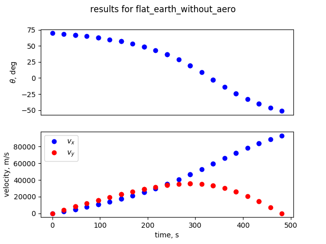

SSTO Lunar Ascent¶
The following example implements a minimum time, single-stage to orbit ascent problem for launching from the lunar surface. This example assumes constant acceleration and a rectilinear gravity field. This example is based on the the example presented Appendix A.3 of [Longuski2016]
To maximize code reuse, this example is implemented using the same general dyamics as the SSTO Earth Ascent example, but the atmospheric model returns a density of zero \(\frac{kg}{m^3}\) regardless of altitude.
import matplotlib.pyplot as plt
import dymos.examples.ssto.ex_ssto_moon as ex_ssto_moon
p = ex_ssto_moon.ssto_moon('gauss-lobatto', num_seg=10,
transcription_order=5, top_level_jacobian='csc')
p.setup(check=True)
p['phase0.t_initial'] = 0.0
p['phase0.t_duration'] = 500.0
phase = p.model.phase0
p['phase0.states:x'] = phase.interpolate(ys=[0, 350000.0], nodes='state_input')
p['phase0.states:y'] = phase.interpolate(ys=[0, 185000.0], nodes='state_input')
p['phase0.states:vx'] = phase.interpolate(ys=[0, 1627.0], nodes='state_input')
p['phase0.states:vy'] = phase.interpolate(ys=[1.0E-6, 0], nodes='state_input')
p['phase0.states:m'] = phase.interpolate(ys=[50000, 50000], nodes='state_input')
p['phase0.controls:theta'] = phase.interpolate(ys=[1.5, -0.76], nodes='control_input')
p.run_driver()
##############################
# quick check of the results
##############################
print(phase.get_values('y')[-1])
print(phase.get_values('vx')[-1])
print(phase.get_values('vy')[-1])
##############################
# Plot the trajectory
##############################
plt.figure(facecolor='white')
plt.plot(phase.get_values('x'), phase.get_values('y'), 'bo')
plt.xlabel('x, m')
plt.ylabel('y, m')
plt.grid()
fig = plt.figure(facecolor='white')
fig.suptitle('results for flat_earth_without_aero')
axarr = fig.add_subplot(2, 1, 1)
axarr.plot(phase.get_values('time'),
np.degrees(phase.get_values('theta')), 'bo')
axarr.set_ylabel(r'$\theta$, deg')
axarr.axes.get_xaxis().set_visible(False)
axarr = fig.add_subplot(2, 1, 2)
axarr.plot(phase.get_values('time'),
np.degrees(phase.get_values('vx')), 'bo', label='$v_x$')
axarr.plot(phase.get_values('time'),
np.degrees(phase.get_values('vy')), 'ro', label='$v_y$')
axarr.set_xlabel('time, s')
axarr.set_ylabel('velocity, m/s')
axarr.legend(loc='best')
plt.show()
WARNING: The Problem has no recorder of any kind attached
Using tolerance: 1e-15
Most common number of zero entries (6292 of 6731) repeated 6 times out of 11 tolerances tested.
Full total jacobian was computed 3 times, taking 0.025421 seconds.
Total jacobian shape: (53, 127)
Optimization terminated successfully. (Exit mode 0)
Current function value: 4.817170027377303
Iterations: 62
Function evaluations: 72
Gradient evaluations: 62
Optimization Complete
-----------------------------------
[185000.]
[1627.]
[3.62419283e-18]

References¶
[Longuski2016] Longuski, James M., José J. Guzmán, and John E. Prussing. Optimal control with aerospace applications. Springer, 2016.